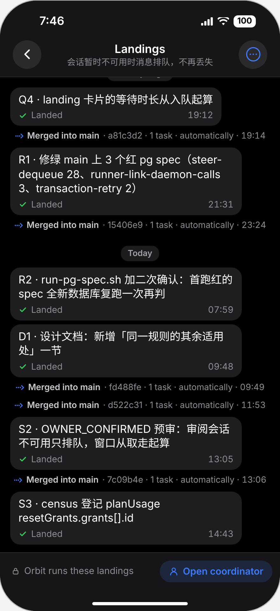

<!doctype html><html lang="zh"><meta charset="utf-8">
<title>Landings 窗口 · iPhone / Android 照会话聊天的画法（2026-11-11）</title>
<style>
/* iPhone 和 Android 的 Landings 窗口，照 web 11-11 上线的画法（docs/mocks/landings-chat-tools）。
   手机内类名带 p-，图板带 b-。深色模式，iPhone 440×956 pt（owner 的机型），Android 412×915 dp。 */
:root { --mark:#FF7A00; }
* { box-sizing:border-box; }
body { margin:0; background:#F3F3F6; font-family:-apple-system,"PingFang SC",sans-serif; color:#1c1c1e; -webkit-font-smoothing:antialiased; }
.board { padding:30px 44px 36px; width:max-content; background:#F3F3F6; }
h1 { font-size:25px; margin:0 0 8px; }
h2 { font-size:19px; margin:4px 0 14px; display:flex; gap:10px; align-items:center; }
h2 .no { display:inline-grid; place-items:center; width:28px; height:28px; border-radius:50%; background:#1c1c1e; color:#fff; font-size:15px; }
h2 .sub { font-size:14px; font-weight:500; color:#6b6b72; }
.lede { width:1880px; font-size:15px; line-height:1.7; color:#3a3a40; margin:0 0 22px; }
.row { display:flex; gap:36px; align-items:flex-start; }
figure { margin:0; }
.tag { display:inline-block; font-size:13px; font-weight:700; border-radius:7px; padding:3px 10px; margin-bottom:10px; }
.tag.today { background:#FFE3E0; color:#B42318; } .tag.after { background:#DDE7FF; color:#2447B8; }
.notes { width:440px; font-size:14px; line-height:1.66; color:#2c2c31; margin-top:12px; }
.notes ol { margin:0; padding:0; list-style:none; } .notes li { margin:7px 0; position:relative; padding-left:28px; }
.notes li .n { position:absolute; left:0; top:1px; }
.n { display:inline-grid; place-items:center; width:21px; height:21px; border-radius:50%; background:var(--mark); color:#fff; font:700 12.5px/1 -apple-system,sans-serif; }
.pin { position:absolute; z-index:60; box-shadow:0 0 0 2px #fff; }
i.en { font-style:italic; } code { font:12.5px "JetBrains Mono",monospace; background:rgba(0,0,0,.06); border-radius:4px; padding:0 4px; }
.shot img { display:block; width:440px; border-radius:58px; box-shadow:0 0 0 1.5px rgba(0,0,0,.25); }
table { border-collapse:separate; border-spacing:0; width:1880px; background:#fff; border-radius:12px; overflow:hidden; box-shadow:0 0 0 1px rgba(0,0,0,.07); font-size:14px; line-height:1.55; }
th,td { text-align:left; vertical-align:top; padding:9px 13px; border-bottom:1px solid #EEEEF1; } th { background:#FAFAFC; color:#6b6b72; font-weight:600; font-size:13px; }
td:first-child { font-weight:650; width:170px; } tr:last-child td { border-bottom:0; }
.ask { width:1880px; background:#FFFBEA; box-shadow:0 0 0 1.5px #F2CF63; border-radius:12px; padding:6px 18px 12px; margin-top:18px; font-size:14.5px; line-height:1.75; }
.rec { color:#1E7B34; font-weight:650; }

/* ── 手机（共用） ── */
.p { position:relative; overflow:hidden; color:#fff; box-shadow:0 0 0 1.5px rgba(0,0,0,.25); }
.p.ios { width:440px; height:956px; border-radius:58px; background:#000; --l2:#8D8D93; --l3:#636366; --fill:#1E1E21; --tint:#3E7BFA; --green:#30D158; --red:#FF453A; --mono:"SF Mono","JetBrains Mono",monospace; }
.p.and { width:412px; height:915px; border-radius:30px; background:#121316; --l2:#A3A6AE; --l3:#6E727A; --fill:#1D1F24; --tint:#8AB4F8; --green:#81C995; --red:#F28B82; --mono:"Roboto Mono","JetBrains Mono",monospace; font-family:Roboto,-apple-system,"PingFang SC",sans-serif; }
.p-sb { position:absolute; top:0; left:0; right:0; height:62px; display:flex; justify-content:space-between; align-items:center; padding:4px 38px 0 62px; font-size:18px; font-weight:650; z-index:21; }
.p.and .p-sb { height:36px; padding:0 22px; font-size:14px; font-weight:500; }
.p-top { position:absolute; top:0; left:0; right:0; z-index:20; background:#161618; border-bottom:.5px solid rgba(255,255,255,.08); }
.p.ios .p-top { height:120px; } .p.and .p-top { height:100px; background:#1A1C20; border:0; }
.p-back { position:absolute; left:20px; top:62px; width:45px; height:45px; border-radius:50%; background:#2A2A2D; display:grid; place-items:center; }
.p-more { position:absolute; right:20px; top:62px; width:45px; height:45px; border-radius:50%; background:#2A2A2D; display:grid; place-items:center; }
.p-ttl { position:absolute; left:76px; right:76px; top:64px; height:45px; text-align:center; display:flex; flex-direction:column; justify-content:center; }
.p-t1 { font-size:18px; font-weight:650; line-height:22px; } .p-t2 { font-size:13.5px; line-height:17px; color:var(--l2); white-space:nowrap; overflow:hidden; text-overflow:ellipsis; }
.p.and .p-back { left:8px; top:46px; width:44px; height:44px; background:none; }
.p.and .p-more { right:6px; top:46px; width:44px; height:44px; background:none; }
.p.and .p-ttl { left:60px; right:56px; top:44px; height:48px; text-align:left; } .p.and .p-t1 { font-size:20px; font-weight:500; } .p.and .p-t2 { font-size:13px; }
.p-home { position:absolute; bottom:9px; left:50%; width:150px; height:5px; margin-left:-75px; border-radius:3px; background:#fff; z-index:30; }
.p.and .p-home { width:108px; height:4px; margin-left:-54px; bottom:8px; background:#cfd1d6; }
.p-body { position:absolute; left:0; right:0; overflow:hidden; display:flex; flex-direction:column; justify-content:flex-end; padding:0 16px 6px; }
.p.ios .p-body { top:120px; bottom:92px; } .p.and .p-body { top:100px; bottom:84px; padding:0 14px 6px; }
.p-body > * { flex-shrink:0; }
.p-bar { position:absolute; left:0; right:0; bottom:0; background:#161618; border-top:.5px solid rgba(255,255,255,.10); z-index:20; display:flex; align-items:flex-start; padding:12px 12px 0 18px; gap:10px; }
.p.ios .p-bar { height:92px; } .p.and .p-bar { height:84px; background:#1A1C20; border-top:1px solid #2A2D33; }
.p-bar .w { flex:1; min-width:0; font-size:14.5px; color:var(--l2); line-height:34px; white-space:nowrap; display:flex; align-items:center; gap:7px; }
.p-btn { display:inline-flex; align-items:center; gap:6px; font-size:15px; font-weight:600; color:var(--tint); background:rgba(62,123,250,.16); border-radius:17px; padding:0 14px; height:34px; }
.p.and .p-btn { background:none; border:1px solid #5F6368; border-radius:20px; height:36px; font-size:14px; font-weight:500; }
.p-chip { align-self:center; margin:12px 0 8px; font-size:13px; font-weight:650; color:#A0A0A6; background:rgba(118,118,128,.24); border-radius:11px; padding:3px 11px; line-height:16px; }
.p-chip.now { color:var(--tint); background:rgba(62,123,250,.16); }

/* 后台任务那一行：第一行 标记 · 怎么结的 · 胶囊 · 时刻 · Details ›，第二行 名字 */
.p-line { padding:5px 2px; }
.p-l1 { display:flex; align-items:center; gap:6px; font-size:15px; color:var(--l2); white-space:nowrap; }
.p.and .p-l1 { font-size:14px; }
.p-l1 .mk { width:16px; height:16px; flex:none; display:grid; place-items:center; }
.p-l1 .st { font-family:var(--mono); font-size:11.5px; color:#C9C9CE; background:rgba(255,255,255,.08); border-radius:5px; padding:1px 6px; }
.p-l1 .tm { font-variant-numeric:tabular-nums; font-size:13px; }
.p-l1 .dt { font-size:13px; display:inline-flex; align-items:center; gap:4px; }
.p-l1 .dt svg { transition:none; }
.p-line.failed .p-l1 .tt { color:var(--red); }
.p-l2 { margin:2px 0 0 22px; font-size:15px; line-height:20px; color:#E5E5EA; display:-webkit-box; -webkit-line-clamp:2; -webkit-box-orient:vertical; overflow:hidden; }
.p.and .p-l2 { font-size:14px; }
.p-line.merge .p-l2 { color:var(--l2); }

/* 步骤 = 会话的工具行 */
.p-steps { margin:4px 0 6px 22px; display:flex; flex-direction:column; gap:3px; }
.p-tool { position:relative; padding:6px 8px 6px 11px; border-radius:0; }
.p-tool::before { content:""; position:absolute; left:0; top:0; bottom:0; width:3px; background:var(--tone); }
.p-tool.open { background:rgba(255,255,255,.04); border-radius:8px; overflow:hidden; }
.p-tr { display:flex; align-items:center; gap:7px; white-space:nowrap; min-width:0; }
.p-tr .cv { width:10px; flex:none; color:#6E6E73; }
.p-tr .ic { width:20px; height:20px; flex:none; border-radius:5px; display:grid; place-items:center; background:color-mix(in srgb, var(--tone) 18%, transparent); }
.p-tr .nm { font-family:var(--mono); font-weight:650; font-size:13.5px; flex:none; }
.p-tr .su { flex:1; min-width:0; overflow:hidden; text-overflow:ellipsis; font-size:13.5px; color:var(--l2); }
.p-tr .sw { flex:none; font-size:12px; color:var(--l2); }
.p-tr .sw.err { color:var(--red); }
.p-det { margin:8px 0 2px 17px; display:flex; flex-direction:column; gap:5px; }
.p-ev { display:flex; gap:8px; font-size:13px; line-height:18px; color:#D1D1D6; }
.p-ev .t { width:36px; flex:none; color:var(--l3); font-variant-numeric:tabular-nums; font-size:12px; }
.p-out { margin-top:4px; padding:8px 10px; border-radius:7px; background:#0B0B0C; font:11.5px/16px var(--mono); color:#C7C7CC; white-space:pre; overflow:hidden; }
.p-out.err { background:rgba(255,69,58,.12); color:#FFB4AE; }
.p-links { margin:6px 0 2px 22px; display:flex; gap:16px; font-size:14px; font-weight:600; color:var(--tint); }
.p-wait { margin:6px 0 4px 22px; padding:10px 12px; border-radius:10px; background:rgba(255,255,255,.06); }
.p-wait .wl { display:flex; align-items:center; gap:7px; font-size:13.5px; color:var(--l2); }
.p-wait .dr { display:flex; gap:8px; margin-top:9px; }
.p-pri, .p-sec { font-size:14.5px; font-weight:600; padding:7px 14px; border-radius:18px; }
.p-pri { background:var(--tint); color:#fff; } .p-sec { background:#2C2C2E; color:#fff; }
.p.and .p-pri { background:#8AB4F8; color:#062E6F; border-radius:20px; } .p.and .p-sec { background:none; border:1px solid #5F6368; color:#8AB4F8; border-radius:20px; }
.p-head { font-size:13.5px; color:var(--l2); margin:10px 0 2px 2px; }
.p-meter { position:relative; height:4px; border-radius:2px; background:rgba(62,123,250,.22); margin:8px 0 4px 22px; }
.p-meter i { position:absolute; left:0; top:0; bottom:0; width:21%; border-radius:2px; background:var(--tint); }
.p-meter u { position:absolute; top:-3px; left:30%; width:1.5px; height:10px; background:#8E8E93; }
.p-live { margin:2px 0 4px 22px; font-size:12.5px; color:var(--l2); display:flex; align-items:center; gap:6px; }
.p-live b { width:7px; height:7px; border-radius:50%; background:var(--green); display:inline-block; }
.p-sentence { margin:2px 0 0 22px; font-size:12.5px; color:var(--l3); }
</style>
<body>
<script>
const I = {
  back: (c='#fff') => `<svg width="22" height="22" viewBox="0 0 24 24" fill="none" stroke="${c}" stroke-width="2.5" stroke-linecap="round" stroke-linejoin="round"><path d="M15 5l-7 7 7 7"/></svg>`,
  backA: '<svg width="24" height="24" viewBox="0 0 24 24" fill="none" stroke="#E3E3E8" stroke-width="2" stroke-linecap="round" stroke-linejoin="round"><path d="M20 12H5M11 5l-7 7 7 7"/></svg>',
  dots: '<svg width="24" height="24" viewBox="0 0 24 24" fill="#3E7BFA"><circle cx="6" cy="12" r="1.8"/><circle cx="12" cy="12" r="1.8"/><circle cx="18" cy="12" r="1.8"/></svg>',
  dotsV: '<svg width="24" height="24" viewBox="0 0 24 24" fill="#E3E3E8"><circle cx="12" cy="5.5" r="1.9"/><circle cx="12" cy="12" r="1.9"/><circle cx="12" cy="18.5" r="1.9"/></svg>',
  ok: (s=16,c='var(--green)') => `<svg width="${s}" height="${s}" viewBox="0 0 24 24"><circle cx="12" cy="12" r="11" fill="${c}"/><path d="M7 12.5l3.3 3.3L17.2 9" fill="none" stroke="#000" stroke-width="2.6" stroke-linecap="round" stroke-linejoin="round"/></svg>`,
  err: (s=16) => `<svg width="${s}" height="${s}" viewBox="0 0 24 24"><circle cx="12" cy="12" r="11" fill="var(--red)"/><path d="M8.3 8.3l7.4 7.4M15.7 8.3l-7.4 7.4" stroke="#000" stroke-width="2.6" stroke-linecap="round"/></svg>`,
  quiet: (s=16) => `<svg width="${s}" height="${s}" viewBox="0 0 24 24" fill="none" stroke="var(--l2)" stroke-width="2"><circle cx="12" cy="12" r="10"/><path d="M7.5 12h9"/></svg>`,
  clock: (s=16) => `<svg width="${s}" height="${s}" viewBox="0 0 24 24" fill="none" stroke="var(--l2)" stroke-width="2" stroke-linecap="round"><circle cx="12" cy="12" r="10"/><path d="M12 7v5l3 2"/></svg>`,
  merge: '<svg width="16" height="16" viewBox="0 0 24 24" fill="var(--tint)"><circle cx="3.6" cy="12" r="1.8"/><circle cx="8.6" cy="12" r="1.8"/><circle cx="13.6" cy="12" r="1.8"/><path d="M17 6.8l5.2 5.2-5.2 5.2" fill="none" stroke="var(--tint)" stroke-width="2.4" stroke-linecap="round" stroke-linejoin="round"/></svg>',
  chev: (open) => `<svg width="10" height="10" viewBox="0 0 24 24" fill="none" stroke="currentColor" stroke-width="3.2" stroke-linecap="round" stroke-linejoin="round">${open ? '<path d="M5 9l7 7 7-7"/>' : '<path d="M9 5l7 7-7 7"/>'}</svg>`,
  spin: '<svg width="16" height="16" viewBox="0 0 24 24" fill="none" stroke="var(--tint)" stroke-width="2.6" stroke-linecap="round"><path d="M12 3a9 9 0 1 1-8.5 6"/></svg>',
  lock: '<svg width="14" height="14" viewBox="0 0 24 24" fill="none" stroke="currentColor" stroke-width="2.2" stroke-linecap="round"><rect x="5" y="10.5" width="14" height="10" rx="2.5"/><path d="M8.5 10.5V7.5a3.5 3.5 0 0 1 7 0v3"/></svg>',
  person: (c='var(--tint)') => `<svg width="16" height="16" viewBox="0 0 24 24" fill="none" stroke="${c}" stroke-width="2.1" stroke-linecap="round"><circle cx="12" cy="8" r="4"/><path d="M4.5 20.5a7.5 7.5 0 0 1 15 0"/></svg>`,
  list: '<svg width="12" height="12" viewBox="0 0 24 24" fill="none" stroke="#AEAEB2" stroke-width="2.6" stroke-linecap="round"><path d="M8 6h12M8 12h12M8 18h12M3.5 6h.01M3.5 12h.01M3.5 18h.01"/></svg>',
  down: '<svg width="12" height="12" viewBox="0 0 24 24" fill="none" stroke="#5E9BFF" stroke-width="2.6" stroke-linecap="round" stroke-linejoin="round"><path d="M12 4v11M7 10l5 5 5-5M5 20h14"/></svg>',
  branch: '<svg width="12" height="12" viewBox="0 0 24 24" fill="none" stroke="#5E9BFF" stroke-width="2.4" stroke-linecap="round"><circle cx="6" cy="5" r="2"/><circle cx="6" cy="19" r="2"/><circle cx="18" cy="7" r="2"/><path d="M6 7v10M18 9c0 5-6 4-11 8"/></svg>',
  term: '<svg width="12" height="12" viewBox="0 0 24 24" fill="none" stroke="#30D5C8" stroke-width="2.4" stroke-linecap="round" stroke-linejoin="round"><rect x="3" y="4" width="18" height="16" rx="2"/><path d="M7 9l3 3-3 3M12 15h5"/></svg>',
  up: '<svg width="12" height="12" viewBox="0 0 24 24" fill="none" stroke="#FF9F0A" stroke-width="2.4" stroke-linecap="round" stroke-linejoin="round"><path d="M7 17a4.5 4.5 0 0 1-.5-9 6 6 0 0 1 11.3 1.5A3.8 3.8 0 0 1 17 17"/><path d="M12 11v8M9 14l3-3 3 3"/></svg>',
};
const TONE = { Queue: ['#8E8E93', I.list], Claim: ['#3E7BFA', I.down], Sync: ['#3E7BFA', I.branch], 'Merge check': ['#14B8A6', I.term], Push: ['#FF9F0A', I.up] };
const LINE = 'project/34vDQ99CM6oxGIO3kLVX9';

function line(o, plat) {
  const mk = o.kind === 'merge' ? I.merge : o.kind === 'failed' ? I.err() : o.kind === 'quiet' ? I.quiet() : o.kind === 'running' ? I.clock() : I.ok();
  return `<div class="p-line ${o.kind}" ${o.mk ? `data-mk="${o.mk}"` : ''}>
    <div class="p-l1"><span class="mk">${mk}</span><span class="tt">${o.title}</span>${o.status ? `<span class="st">${o.status}</span>` : ''}${o.time ? `<span class="tm">${o.time}</span>` : ''}<span class="dt">Details ${I.chev(o.open)}</span></div>
    <div class="p-l2">${o.name}</div>
  </div>${o.body ?? ''}`;
}
function tool(name, summary, status, plat, detail = null, mk = '') {
  const [tone, ic] = TONE[name];
  const st = plat === 'and'
    ? `<span class="sw ${status === 'err' ? 'err' : ''}">${status === 'ok' ? 'Complete' : status === 'err' ? 'Failed' : 'Running'}</span>`
    : (status === 'ok' ? I.ok(15) : status === 'err' ? I.err(15) : I.spin);
  return `<div class="p-tool${detail ? ' open' : ''}" style="--tone:${tone}" ${mk ? `data-mk="${mk}"` : ''}>
    <div class="p-tr"><span class="cv">${I.chev(!!detail)}</span><span class="ic">${ic}</span><span class="nm">${name}</span><span class="su">${summary}</span>${st}</div>
    ${detail ? `<div class="p-det">${detail}</div>` : ''}</div>`;
}
const ev = (t, text) => `<div class="p-ev"><span class="t">${t}</span><span>${text}</span></div>`;
const out = (text, err = false) => `<div class="p-out${err ? ' err' : ''}">${text}</div>`;
const links = `<div class="p-links"><span>Open Task ›</span><span>Open Source Session ›</span></div>`;

const okSteps = (plat) => `<div class="p-steps">
  ${tool('Queue', `Task marked done · queued to land on ${LINE}`, 'ok', plat)}
  ${tool('Claim', 'Claimed by runner workstation-gpu · claim 1', 'ok', plat)}
  ${tool('Sync', 'Preparing the combined tree', 'ok', plat)}
  ${tool('Merge check', 'Merge check passed · 0m 16s', 'ok', plat, ev('23:24', 'Merge check started · claim 1') + ev('23:26', 'Merge check passed · 0m 16s <span style="color:var(--tint)">Log ›</span>') + out('$ npm run test:landing\n✓ project-done-push.pg.spec.ts (7)  2.8s\n✓ ProjectDone.test.tsx (9)        1.2s\nAll 28 tests passed in 0m 16s'), '2')}
  ${tool('Push', `Landed on ${LINE} · 9afb7d1`, 'ok', plat)}
</div>${links}`;
const failSteps = (plat) => `<div class="p-steps">
  ${tool('Queue', `Task marked done · queued to land on ${LINE}`, 'ok', plat)}
  ${tool('Claim', 'Claimed by runner workstation-gpu · claim 1', 'ok', plat)}
  ${tool('Sync', 'Rebasing onto the project line', 'ok', plat)}
  ${tool('Merge check', 'Check failed · nothing was pushed', 'err', plat, ev('00:36', 'Merge check failed · exit 1 after 3m 52s') + out('✗ owner-requests.pg.spec.ts\n  Expected 409, received 200\n1 failed, 41 passed', true))}
</div>
<div class="p-wait"><div class="wl">${I.person('var(--l2)')}Decisions: the coordinator</div><div class="dr"><span class="p-pri">Open Coordinator</span><span class="p-sec">Open Task</span></div></div>`;
const runSteps = (plat) => `<div class="p-sentence">checking · output 2s ago · usually ~9m · claim 1</div>
  <div class="p-meter"><i></i><u></u></div><div class="p-live"><b></b>Output 2s ago · Updated just now</div>
  <div class="p-steps">
  ${tool('Queue', `Task marked done · queued to land on ${LINE}`, 'ok', plat)}
  ${tool('Claim', 'Claimed by runner workstation-gpu · claim 1', 'ok', plat)}
  ${tool('Merge check', 'Merge check started · claim 1', 'run', plat, ev('00:41', 'Merge check · live 6m 12s') + out('✓ push-tokens.pg.spec.ts (14)  6.0s\n… PushSettings.test.tsx'))}
</div>`;

const history = (plat, open) => [
  `<div class="p-chip">2–7 days ago</div>`,
  line({ kind: 'ok', title: 'Landed', status: 'check 2m 05s', time: '21:31', name: 'R1 · 修绿 main 上 3 个红 pg spec（steer-dequeue 28、runner-link-daemon-calls 3、transaction-retry 2）' }, plat),
  line({ kind: 'merge', title: 'Merged into main', status: 'automatically', time: '23:24', name: '15406e9 · 1 task' }, plat),
  line({ kind: 'ok', title: 'Landed', status: 'check 0m 52s', time: '23:40', name: 'D1 · 设计文档：新增「同一规则的其余适用处」一节' }, plat),
  line({ kind: 'merge', title: 'Merged into main', status: 'automatically', time: '23:41', name: 'fd488fe · 1 task' }, plat),
  `<div class="p-chip">Yesterday</div>`,
  line({ kind: 'merge', title: 'Merged into main', status: 'automatically', time: '23:06', name: '1fec9fb · 2 tasks', mk: open ? '' : '3' }, plat),
  line({ kind: 'ok', title: 'Landed', status: 'check 0m 16s', time: '23:20', name: 'Server: refuse a done request unchanged since the owner said Not yet', mk: open ? '' : '1' }, plat),
  line({ kind: 'ok', title: 'Landed', status: 'check 0m 16s', time: '23:26', name: 'Server: push the owner when the projection records a project DONE', open, body: open ? okSteps(plat) : '', mk: open ? '1' : '' }, plat),
  line({ kind: 'merge', title: 'Merged into main', status: 'automatically', time: '23:43', name: '8958893 · 2 tasks' }, plat),
  line({ kind: 'quiet', title: 'Nothing to land', status: 'no commits', time: '23:51', name: 'Docs: note the done-request digest rule' }, plat),
  `<div class="p-chip" ${open ? '' : 'data-mk="4"'}>Today</div>`,
  line({ kind: 'ok', title: 'Landed', status: 'check 0m 41s', time: '07:59', name: 'R2 · run-pg-spec.sh 加二次确认：首跑红的 spec 全新数据库复跑一次再判', mk: open ? '' : '2' }, plat),
].join('');
const bottom = (plat) => [
  line({ kind: 'merge', title: 'Merged into main', status: 'automatically', time: '23:43', name: '8958893 · 2 tasks' }, plat),
  `<div class="p-chip now">Now</div>`,
  line({ kind: 'failed', title: 'Not landed', status: 'exit 1', time: '00:36', name: 'Server: answer a withdrawn owner request with 409', open: true, body: failSteps(plat), mk: '1' }, plat),
  `<div class="p-head" data-mk="2">Working for 7m 47s</div>`,
  line({ kind: 'running', title: 'Landing', status: '6m 12s of 30m', name: "Server: drop the owner's push when the device token is revoked", open: true, body: runSteps(plat) }, plat),
].join('');

function phone(plat, body, id) {
  const ios = plat === 'ios';
  return `<div class="p ${plat}" id="${id}">
    <div class="p-sb"><span>${ios ? '7:46' : '7:46'}</span><span style="font-size:${ios ? 15 : 13}px">${ios ? '▂▄▆█  100' : '▾ ◢ 100%'}</span></div>
    <div class="p-top"><div class="p-back">${ios ? I.back() : I.backA}</div>
      <div class="p-ttl"><div class="p-t1">Landings</div><div class="p-t2">Project DONE: owner confirmation review</div></div>
      <div class="p-more">${ios ? I.dots : I.dotsV}</div></div>
    <div class="p-body">${body}</div>
    <div class="p-bar"><span class="w">${I.lock}Orbit runs these landings</span><span class="p-btn">${I.person()}Open coordinator</span></div>
    <div class="p-home"></div></div>`;
}

const fig = (tag, cls, html, notes = '') => `<figure><span class="tag ${cls}">${tag}</span>${html}${notes ? `<div class="notes">${notes}</div>` : ''}</figure>`;
document.body.insertAdjacentHTML('beforeend', `
<div class="board" data-png="01-iphone">
<h1>Landings 窗口 · iPhone / Android 照会话聊天的画法（2026-11-11 · 按 main c906f448c）</h1>
<p class="lede"><b>owner 11-11</b>：「iPhone 和 Android 也按同一套出设计图」。同一套 = web 今天上线的那套（<code>docs/mocks/landings-chat-tools</code>）：每次落地、每轮合入是会话里<b>后台任务那一行</b>；点开是<b>会话的工具行</b>（Queue · Claim · Sync · Merge check · Push）；等决定的默认展开；正在跑的是 <i class="en">Working for</i> 回合。两端各用自己会话里已有的那几样（iOS <code>BackgroundWakeCardView</code> / <code>ToolCardView</code>，Android <code>BackgroundWakeViews</code> / 会话的工具行），不新造部件。<br>
11-10 的标题栏（导航栏一行）、底栏（一行、贴底、带锁）、日期胶囊不变。英文是上线文案，中文是说明；任务名照你的截图，深色模式照你的手机。手机这几帧是照两端代码手画的，没有真机截图。</p>
<h2><span class="no">1</span>iPhone<span class="sub">左边是 11-10 上线的样子，右边三帧是改后</span></h2>
<div class="row">
 ${fig('a · 现在（11-10 版）', 'today', '<div class="shot"></div>', '<ol><li>落地是气泡、合入是居中一行；点开是一块时间线。</li></ol>')}
 ${fig('b · 改后 · 往上翻', 'after', phone('ios', history('ios', false), 'ios-hist'), `<ol>
   <li><span class="n">1</span><b>一次落地 = 会话的后台任务行，手机上分两行</b>：第一行 <i class="en">✓ Landed</i> · <code>check 0m 16s</code> · 时刻 · <i class="en">Details ›</i>；第二行是任务名，最多两行。</li>
   <li><span class="n">2</span>中文任务名一样两行，不截成一个字。</li>
   <li><span class="n">3</span><b>合入 main 也是这一行</b>：<i class="en">⇢ Merged into main · automatically</i>，第二行 <i class="en">1fec9fb · 2 tasks</i>。</li>
   <li><span class="n">4</span>日期胶囊不变；行与行之间只留会话里一串后台任务行那么宽。</li></ol>`)}
 ${fig('c · 改后 · 点开 23:26 那条', 'after', phone('ios', history('ios', true), 'ios-open'), `<ol>
   <li><span class="n">1</span><b>点开 = 5 个工具行</b>，挂在那一行下面：iOS 会话的工具行原样——左边颜色条、图标块、等宽粗体名、一行说明、✓。手机窄，<b>行上不放时刻</b>，时刻在点开的那几行里。</li>
   <li><span class="n">2</span>Merge check 点开就像会话里的 Bash：原来的那几行、<i class="en">Log ›</i>、输出。</li></ol>`)}
 ${fig('d · 改后 · 窗口最底（Now）', 'after', phone('ios', bottom('ios'), 'ios-bottom'), `<ol>
   <li><span class="n">1</span><b>等决定的</b>：红 <i class="en">✗ Not landed</i> 行，默认展开：失败那一步带错误输出，下面 <i class="en">Decisions: the coordinator</i> 和两个门。</li>
   <li><span class="n">2</span><b>正在跑的</b>：<i class="en">Working for 7m 47s</i> 回合头，状态一句、预算条、活跃度，工具行逐步打勾，当前那步转圈、展开是实时输出。</li></ol>`)}
</div></div>

<div class="board" data-png="02-android">
<h2><span class="no">2</span>Android<span class="sub">同样三帧；用 Android 会话自己的样子（Material 顶栏、⋮、工具行末尾是 Complete / Failed / Running 字样）</span></h2>
<div class="row">
 ${fig('e · 改后 · 往上翻', 'after', phone('and', history('and', false), 'and-hist'), `<ol>
   <li><span class="n">1</span>和 iPhone 同一套两行：第一行标记 · 怎么结的 · 胶囊 · 时刻 · <i class="en">Details ›</i>，第二行任务名。Android 会话的后台任务行（<code>BackgroundWakeViews</code>）窄屏时本来就这样折行。</li>
   <li><span class="n">3</span>合入 main 同一行。</li></ol>`)}
 ${fig('f · 改后 · 点开 23:26 那条', 'after', phone('and', history('and', true), 'and-open'), `<ol>
   <li><span class="n">1</span>5 个工具行；行尾是 Android 会话工具行自己的状态字（<i class="en">Complete</i>），不是 iOS 的 ✓。</li>
   <li><span class="n">2</span>Merge check 点开：原来的几行 + 输出。</li></ol>`)}
 ${fig('g · 改后 · 窗口最底（Now）', 'after', phone('and', bottom('and'), 'and-bottom'), `<ol>
   <li><span class="n">1</span>等决定的红行默认展开，门是 Material 的实心 / 描边按钮。</li>
   <li><span class="n">2</span>正在跑的：<i class="en">Working for</i> 回合，当前步 <i class="en">Running</i>。</li></ol>`)}
 <div style="width:440px">
  <table style="width:440px"><tr><th colspan="2">三端一样的规则</th></tr>
   <tr><td>一次落地</td><td>后台任务行；手机分两行（标记行 + 任务名）</td></tr>
   <tr><td>合入 main</td><td>同一种行，⇢</td></tr>
   <tr><td>点开</td><td>5 个工具行，分组和 web 一样（<code>landingSteps</code> 的规则搬到 OrbitKit / Kotlin）</td></tr>
   <tr><td>等决定的</td><td>红行默认展开 + 谁来定 + 门</td></tr>
   <tr><td>正在跑的</td><td>Working for 回合 + 工具行</td></tr>
   <tr><td>胶囊</td><td>check 时长；设置行第一次出现时读一次它的记录（iOS 已经这样读）</td></tr>
   <tr><td>不变</td><td>标题栏、底栏、日期胶囊、长按菜单、接口</td></tr></table>
  <div class="ask" style="width:440px"><b>待你定</b><ol style="margin:4px 0 0;padding-left:20px">
   <li>手机上那一行：<span class="rec">两行（推荐）</span>——标记行 + 任务名；还是照 iOS 后台任务行窄屏的三行（标记 + 名字 + 胶囊/时刻各一行）。</li>
   <li>工具行上的时刻：<span class="rec">手机不放（推荐）</span>，点开看；还是和 web 一样放。</li>
   <li>Android 工具行尾：<span class="rec">照 Android 会话用字（推荐）</span>；还是和 iOS 一样用 ✓ 图标。</li>
   <li>先改哪端：<span class="rec">iPhone 先（推荐，你天天用）</span>，Android 随后；还是一起。</li></ol></div>
 </div>
</div></div>`);

window.drawMarks = () => {
  for (const ph of document.querySelectorAll('.p')) {
    const pr = ph.getBoundingClientRect();
    ph.querySelectorAll('[data-mk]').forEach((el) => {
      const r = el.getBoundingClientRect();
      if (r.top < pr.top + 100 || r.top > pr.bottom - 90) return;
      const b = document.createElement('span'); b.className = 'n pin'; b.textContent = el.dataset.mk;
      b.style.left = (Math.min(r.right - pr.left, ph.clientWidth - 26) - 4) + 'px'; b.style.top = (r.top - pr.top - 6) + 'px';
      ph.appendChild(b);
    });
  }
};
</script></body></html>
